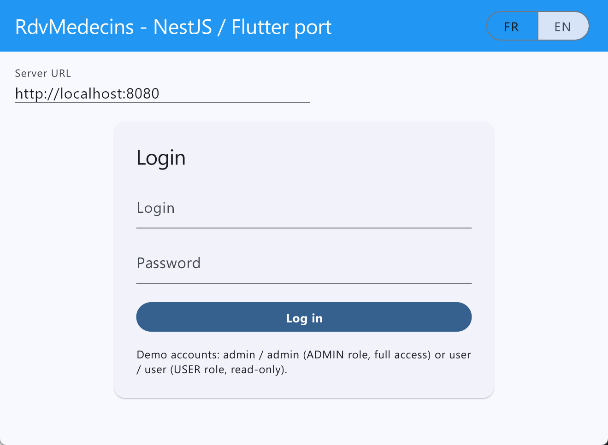
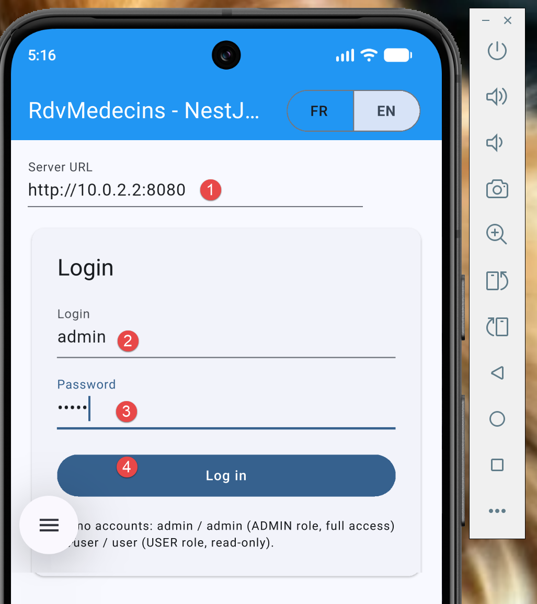
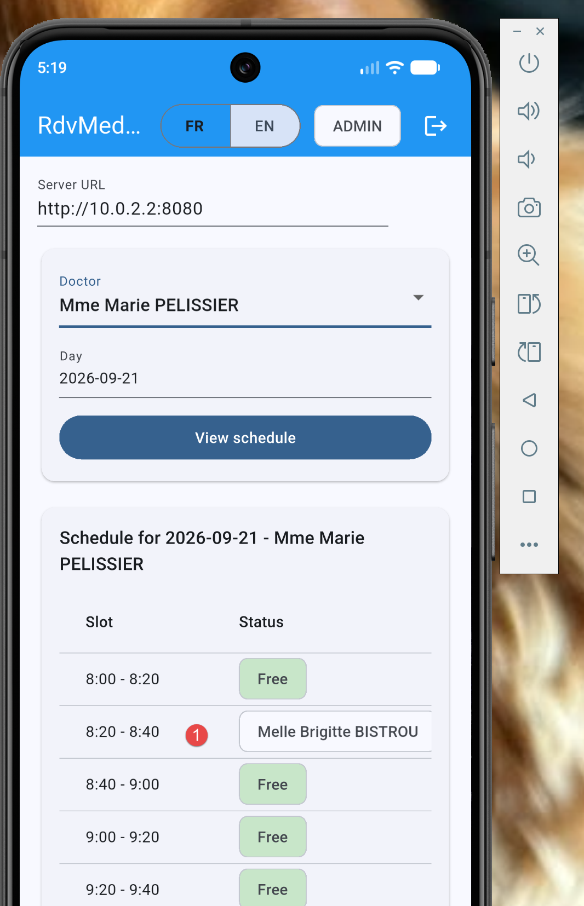

6. Capítulo 5 - Portabilidade do aplicativo Flutter para mobile, desktop e web
6.1. Um único código-fonte, vários alvos de compilação
Este é o núcleo deste capítulo e a razão de ser desta variante do curso: NENHUMA linha do Capítulo 4 ([lib/], [pubspec.yaml], [assets/]) muda, qualquer que seja o alvo escolhido. “Portar” o aplicativo aqui consiste simplesmente em escolher um COMANDO DE COMPILAÇÃO diferente ([flutter run -d <target>] ou [flutter build <target>])—nunca em escrever, duplicar ou adaptar widgets. Isso é muito diferente do que um port exigiria com as ferramentas abordadas no restante deste curso: um cliente [Vue.js]/[React]/[Angular] só roda NATIVAMENTE em um navegador—portá-lo para mobile exige uma ferramenta de TERCEIROS ([Cordova]/[Capacitor], não usada neste curso) que o empacota em um invólucro nativo contendo, na realidade, um navegador embutido (uma [WebView]): o código permanece inalterado, mas AINDA ASSIM não é um executável nativo, ao contrário do que [Flutter] produz aqui para mobile e desktop (veja o Capítulo 3, “O que o Flutter não é”).
Os seis alvos ([Android], [iOS], [macOS], [Windows], [Linux], [web]) estão habilitados POR PADRÃO em qualquer projeto criado com [flutter create] desde o [Flutter 3] (veja o Capítulo 1) - Nenhuma configuração é necessária no projeto para adicionar um deles. As únicas diferenças de um alvo para outro são: as ferramentas de compilação nativas instaladas na máquina de desenvolvimento ([Xcode], [Visual Studio], [GTK]...), o comando exato executado e—apenas para mobile—um detalhe de configuração de rede descrito mais adiante neste capítulo.
6.2. Alvo web
O alvo já usado no Capítulo 2 ([flutter run -d chrome]). Dois comandos bastam:
[flutter build web] gera uma pasta [build/web/] autônoma ([index.html], [JavaScript], ou [WebAssembly] compilado, recursos) - para ser implantada em QUALQUER servidor web estático ([Nginx], [Apache], um simples [npx serve]....), exatamente como a pasta [dist/] gerada por [npm run build] no lado [Vue.js]/[Vite]. Este build continua sendo um arquivo [JavaScript] servido a um navegador: portanto, continua dependendo de um servidor [NestJS] ALCANÇÁVEL a partir desse navegador, e, assim, de [app.enableCors()] (veja [src/main.ts] no servidor)—que já está ativo, sem nenhuma alteração necessária no servidor para este alvo.
Um ponto a observar, específico deste alvo: o campo “URL do servidor” na tela de login (veja [_ServerUrlField] em [lib/app.dart], Capítulo 4) deve então apontar para um endereço ALCANÇÁVEL a partir do navegador que executa o aplicativo—[http://localhost:8080] é aceitável desde que o servidor [NestJS] esteja rodando na MESMA máquina que o navegador.
6.3. Alvo desktop
Três sistemas operacionais, três conjuntos de ferramentas nativas pré-requisitos (veja o Capítulo 1), mas comandos [flutter] idênticos na forma:
Cada comando [flutter build <target>] produz um executável nativo AUTÔNOMO ([.app] no macOS, [.exe] + suas bibliotecas no Windows, um binário [ELF] no Linux), em [build/<target>/]—um executável que, ao contrário do build web, não roda em NENHUM navegador nem em NENHUMA [WebView]: trata-se de código nativo executado diretamente no sistema operacional, com sua própria janela e barra de título, gerenciadas pelo próprio [Flutter] .
Este alvo não exige NENHUMA configuração de rede especial: um aplicativo desktop roda na mesma máquina do usuário e acessa [http://localhost:8080] exatamente como qualquer outro programa instalado nessa máquina faria (o campo “URL do servidor” da tela de login permite, como nos outros alvos, apontar para um servidor remoto, se necessário).
Isso produz o seguinte resultado:

A tela acima não é de um navegador, mas de um aplicativo Windows. Para que isso funcione, certas ferramentas precisam estar disponíveis:
- Linha 2: Visual Studio deve estar instalado;
Para ter uma ideia clara do que está faltando no seu projeto Flutter, digite o seguinte comando:
6.4. Emuladores como alvo
O aplicativo Flutter foi testado em um emulador Android:
O resultado no emulador:

- Observe a URL em [1];
Fazer login com admin / admin produz o seguinte resultado:

Preencha o formulário e envie:

Acima está o horário que reservamos usando o aplicativo web.
6.5. Alvo mobile
Nota: o revisor não testou esta seção.
Esta é a área que exige mais atenção, devido a um detalhe específico da rede do emulador/simulador.
6.5.1. A armadilha de rede específica do mobile: localhost deixa de se referir ao PC de desenvolvimento
Este é O detalhe a conhecer para este alvo, sem relação com o próprio [Flutter] : [localhost] (ou [127.0.0.1]), no campo “URL do servidor” da tela de login, SEMPRE se refere à máquina que executa o código - e um emulador/simulador mobile é uma máquina VIRTUAL DISTINTA da máquina de desenvolvimento onde o servidor ([NestJS]) está rodando, mesmo que as duas pareçam “estar no mesmo computador”.
- Emulador [Android] (criado pelo [Android Studio]): use [http://10.0.2.2:8080]—um endereço especial, específico do emulador oficial [Android], que redireciona automaticamente para [localhost] na máquina hospedeira (o PC de desenvolvimento).
- Simulador [iOS] (somente macOS): [http://localhost:8080] funciona diretamente, pois o simulador [iOS] compartilha a rede da máquina hospedeira (ao contrário do emulador [Android]).
- Dispositivo físico ([Android] ou [iOS], conectado à mesma rede Wi-Fi do PC de desenvolvimento): use o endereço [IP] LOCAL deste PC nesta rede (por exemplo, [http://192.168.1.42:8080]), nunca [localhost] nem [10.0.2.2], pois ambos se referem ao próprio dispositivo móvel nesse caso.
6.5.2. Duas restrições adicionais específicas do dispositivo móvel
- O [Android] (desde a API 28) bloqueia por padrão todo o tráfego [HTTP] em TEXTO CLARO (não criptografado com [https://])—como o servidor deste curso escuta em [HTTP] em modo simples, um aplicativo [Android] PRONTO PARA PRODUÇÃO deveria declarar uma exceção explícita ([android:usesCleartextTraffic="true"] no manifesto [Android] gerado, ou uma configuração de segurança de rede mais granular)—uma configuração nativa, em [android/], fora do código [Dart] apresentado neste documento.
- O [iOS] impõe uma política comparável, o [App Transport Security] ([ATS]), que também bloqueia por padrão o [HTTP] em texto simples—uma exceção equivalente é declarada em [ios/Runner/Info.plist] ([NSAppTransportSecurity], [NSAllowsArbitraryLoads]ou, de forma mais específica, uma exceção direcionada apenas ao domínio do servidor de desenvolvimento).
Essas duas configurações se aplicam SOMENTE ao desenvolvimento/demonstração com um servidor [HTTP] não criptografado, como o usado neste curso—uma implantação real em produção exporia, em vez disso, o próprio servidor [NestJS] em [https://] (por exemplo, atrás de um [reverse proxy] como o [Nginx]), o que tornaria essas duas exceções desnecessárias.
6.5.3. Uma tela mais estreita: a armadilha do layout
Uma última diferença específica dos dispositivos móveis nada tem a ver com a rede: um celular em orientação retrato tem apenas cerca de 360 pixels de largura (em pixels lógicos do [Flutter]), contra várias centenas a mais em um navegador ou em uma janela desktop. Uma tela projetada para um monitor grande pode, portanto, se tornar inutilizável em um celular: foi isso que aconteceu com a primeira versão do cliente deste documento, testada em um emulador [Android]. O seletor de médico/dia/botão ([doctor_day_picker.dart]) alinhava três campos em uma única [Row], e a barra de título ([app.dart]) exibia tudo de uma vez: foi preciso colocar o emulador em modo paisagem para ver tudo. O Capítulo 4 mostra a correção. Duas regras decorrem disso:
- Nunca presuma uma largura. Para escolher um layout, verifique a largura realmente disponível—seja em um ponto específico da árvore usando [LayoutBuilder] ([constraints.maxWidth]), seja para a tela inteira com [MediaQuery.sizeOf(context).width]—e então escolha [Row] (tela larga) ou [Column] (tela estreita).
- Teste cedo em uma tela estreita: use o emulador em modo retrato ou uma janela do [Chrome] que você redimensiona para ficar mais estreita. No modo de depuração, o [Flutter] indica que o conteúdo está largo demais com uma faixa amarela e preta com o texto “RIGHT OVERFLOWED BY … PIXELS” no aplicativo, além de uma mensagem no console.
Isso não contradiz a observação a seguir: o layout se adapta com base no TAMANHO da tela, nunca na plataforma—nenhum [if (kIsWeb)] aparece. Estreitar uma janela de navegador ou de desktop aciona exatamente o mesmo layout “estreito” que um celular.
6.6. Tabela-resumo
- [web] — [flutter run -d chrome] / [flutter build web] — compilado para [JavaScript]/[WebAssembly], executado por um navegador — URL do servidor: [localhost] (mesma máquina).
- [desktop] (macOS/Windows/Linux) — [flutter run -d <os>] / [flutter build <os>] — compilação nativa [AOT], executável autônomo — URL do servidor: [localhost] (mesma máquina).
- [mobile] (emulador Android) — [flutter run] — compilação nativa [AOT] — URL do servidor: [10.0.2.2] (endereço especial para o emulador).
- [mobile] (simulador iOS) — [flutter run] — compilação nativa [AOT] — URL do servidor: [localhost] (rede compartilhada com o hospedeiro).
- [mobile] (dispositivo físico) — [flutter run] — compilação nativa [AOT] — URL do servidor: endereço [IP] local do PC de desenvolvimento, + exceção [cleartext]/[ATS].
6.7. O que NÃO muda no código Dart
Para concluir este capítulo, vale enfatizar o que NÃO precisou ser escrito nem adaptado para cobrir essas três famílias de alvos: nenhuma condição [if (kIsWeb) { ... } else { ... }] aparece no Capítulo 4, nenhum arquivo [_mobile.dart]/[_web.dart] separado e nenhuma biblioteca de abstração adicional. As poucas escolhas já feitas no Capítulo 4 bastam, por si sós, para tornar este código portável entre as três famílias de alvos: [shared_preferences] (em vez de [localStorage], que é específico do navegador) para a persistência, [rootBundle.loadString(...)] (em vez de um [fetch] a um servidor web) para os dicionários de tradução embutidos, e o pacote [http] (em vez de uma API específica do navegador) para a rede. É exatamente o que a introdução deste documento prometia: [a single Flutter codebase is enough to build a mobile app, a desktop app and a web app].